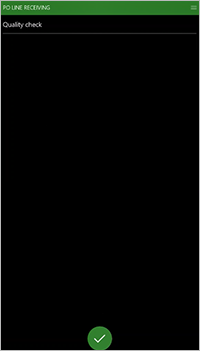

Qualitätsprüfung
Important
Dynamics 365 for Finance and Operations hat sich zu speziell entwickelten Anwendungen entwickelt, mit denen Sie bestimmte Geschäftsfunktionen verwalten können. Weitere Informationen zu diesen Änderungen finden Sie im Dynamics 365-Lizenzierungshandbuch.
Mit der Funktion Qualitätsprüfung können Lagerarbeiter schnelle Stichproben der Qualität durchführen, während sie Artikel an der Eingangsrampe in Empfang nehmen. Diese Stichproben sind hilfreich, wenn Arbeiter Verpackungen oder andere leicht erkennbare Teile eines Artikels inspizieren. Die Funktion hilft den Mitarbeitern, schnell zu überprüfen, ob etwas offensichtlich fehlerhaft oder beschädigt ist, bevor sie die Bestände an ihren Einlagerungslagerplatz lagern.
Diese Funktion ist eine Alternative zum Standardverfahren zur Qualitätsprüfung. Sie bietet mehr Flexibilität und eine schnellere Verarbeitung.
Wenn Sie diese Funktion verwenden, erfolgt die Wareneingangs- und Qualitätsprüfung wie folgt:
Wenn eine Lieferung eintrifft, zeichnet ein Lagerarbeiter den Wareneingang auf. Der Arbeiter scannt auch einen Ladungsträger, um den Standort aufzuzeichnen.
Der Mitarbeiter führt eine schnelle Qualitätsprüfung durch und zeichnet das Ergebnis (bestanden oder nicht bestanden) für diesen Ladungsträger auf.
Eine der folgenden Aktionen erfolgt:
- Wenn die Qualitätsprüfung bestanden ist, wird der Ladungsträger angenommen und wie gewohnt zu einem Empfangsort weitergeleitet.
- Wenn die Qualitätsprüfung nicht bestanden wird, wird der Ladungsträger abgelehnt und laufende Einlagerungsarbeiten werden zur weiteren Überprüfung an einen anderen Ort umgeleitet. Ein neuer Qualitätsprüfungsauftrag wird erstellt. Um den Qualitätsprüfungsauftrag anzusehen, der aus der fehlgeschlagenen Qualitätsprüfung erstellt wurde, gehen Sie zu Bestandsverwaltung > Periodische Aufgaben > Qualitätsmanagement > Qualitätsprüfungsauftrag.
Dieser Vorgang kann auch so eingerichtet werden, dass alle gescannten Ladungsträger sofort an den Ort der Qualitätsprüfung umgeleitet werden.
Die Qualitätsprüfungsfunktion aktivieren
Bevor Sie die Funktion Qualitätsprüfung nutzen können, muss sie auf Ihrem System aktiviert werden. Administratoren können mit den Einstellungen in der Funktionsverwaltung den Status der Funktion überprüfen und sie gegebenenfalls aktivieren. Im Arbeitsbereich Funktionsverwaltung ist die Funktion wie folgt aufgeführt:
- Module: Lagerortverwaltung
- Funktionsname: Qualitätsprüfung
Funktion für das Beispielszenario einrichten
Dieser Abschnitt enthält Richtlinien und ein Beispiel, das zeigt, wie Sie die Funktion Qualitätsprüfung einrichten und Beispieldaten für das Beispielszenario vorbereiten, das später in diesem Thema bereitgestellt wird.
Beispieldaten zur Verfügung stellen
Um das Beispielszenario mithilfe der Beispieldatensätze und -werte, die hier angegeben sind, zu verarbeiten, müssen Sie ein System verwenden, auf dem die standardmäßigen Demodaten (This is an external link) installiert sind. Außerdem müssen Sie die USMF juristische Person auswählen, bevor Sie beginnen.
Qualitätsprüfungsvorlage
Die Qualitätsprüfungsvorlage legt die Regeln für die schnelle Stichprobenprüfung der Qualität beim Wareneingang fest.
Gehen Sie zu Lagerortverwaltung > Einstellungen > Arbeit > Qualitätprüfungsvorlage.
Wählen Sie Neu aus, um dem Raster eine Vorlage hinzuzufügen.
Legen Sie für die neue Vorlage die folgenden Werte fest:
Name der Qualitätsprüfungsvorlage: Eingangsrampenprüfung
Geben Sie einen Namen ein, der die für diese Vorlage geltenden Richtlinien angibt.
Annahmerichtlinie: Benutzer auffordern
+Geben Sie an, ob Benutzer aufgefordert werden sollen, die Qualität des Bestands während der Erledigung der Arbeit anzunehmen oder abzulehnen oder ob die Qualität automatisch abgelehnt werden soll. Die verfügbaren Optionen sind Automatisch ablehnen und Benutzer auffordern.
Qualitätsverarbeitungspolitik: Qualitätsprüfungsauftrag erstellen
Wählen Sie die Richtlinie aus, die verwendet werden soll, wenn die Bestandsqualität abgelehnt wurde. Die folgenden Optionen stehen zur Verfügung:
- Nur Arbeit erstellen: Erstellen Sie nur die Arbeit, um die Bestandsumlagerung zu ermöglichen.
- Qualitätsprüfungsauftrag erstellen: Erstellen Sie einen Qualitätsprüfungsauftrag, um Qualitätstests zu ermöglichen.
Testgruppe: Anlage
Geben Sie die Testgruppe an, die in dem erstellten Qualitätsprüfungsauftrag verwendet werden soll. Testgruppen werden im Modul Bestandsverwaltung eingerichtet.
Lassen Sie die Option Zerstörungstest für die Testgruppe deaktiviert. Diese Option legt fest, ob das Muster im Rahmen der Tests in der Testgruppe zerstört wird. Wird ein Zerstörungstest verwendet, generiert das System beim Erstellen eines Qualitätsprüfungsauftrags für einen Artikel eine Lagerbuchung. Mit der neuen Lagerbuchung wird die Bestandsverringerung für die Testmenge antizipiert. Die Bestandsverringerung wird durchgeführt, wenn der Qualitätsprüfungsauftrag durch den Überprüfungsschritt abgeschlossen wird. Die Lagerbuchung wird als Qualitätsprüfungsauftrag gekennzeichnet.
Arbeitsklasse – Qualitätsprüfung
Arbeitsklassen werden verwendet, um den Typ der Arbeitsauftragspositionen zuzuweisen und/oder einzuschränken, die Lagerarbeiter auf einem mobilen Gerät verarbeiten können.
Wechseln Sie zu Lagerortverwaltung > Einstellungen > Arbeit > Arbeitsklassen.
Wählen Sie Neu aus, um eine Arbeitsklasse zu erstellen.
Legen Sie im Header die folgenden Werte fest:
Arbeitsklassen-ID: QC-Prüfung
Geben Sie den Namen für die Arbeitsklasse ein.
Beschreibung: QC-Prüfung
Geben Sie eine kurze Beschreibung ein, die angibt, wofür die Arbeitsklasse verwendet wird.
Arbeitsauftragstyp: Qualität in der Qualitätsprüfung
Wählen Sie den Typ des Arbeitsauftrags aus, der mit der Arbeitsklasse erstellt wird. Wenn Sie Qualitätskontrollarbeiten einrichten, wählen Sie immer Qualität in der Qualitätsprüfung.
Im Inforegister Gültige Einlagerungsorttypen lassen Sie das Feld Lagerplatztyp leer.
Wenn Sie einen Lagerplatztyp auswählen, begrenzen Sie die Lagerorte, an denen Artikel nach der Entnahme abgelegt werden können. Dieses Feld wird verwendet, wenn eine Lagerplatzrichtlinie versucht, den Lagerplatz aufzulösen oder ein Lagerarbeiter manuell den Speicherort für die Menüoption des mobilen Geräts festlegt.
Weitere Informationen zu Arbeitsklassen und deren Erstellung finden Sie unter Eine Arbeitsklasse erstellen.
Arbeitsvorlage
Mithilfe von Arbeitsvorlagen können Sie die Arbeitsvorgänge definieren, die am Lagerplatz ausgeführt werden müssen. In der Regel bestehen Lagerplatzarbeitsabläufe aus folgenden Aktivitäten: Ein Lagerarbeiter entnimmt verfügbaren Lagerbestand an einem Lagerplatz und legt anschließend den entnommenen Bestand an einem anderen Lagerplatz ab. Eine Arbeitsvorlage für die Qualitätskontrolle legt die Arbeitsabläufe für Qualitätsprüfungen fest.
Bestellungen
Gehen Sie zu Lagerortverwaltung > Einstellungen > Arbeit > Arbeitsvorlagen.
Wählen Sie in der Kopfzeile Arbeitsauftragstyp die Option Bestellungen aus.
Wählen Sie im Aktionsbereich Bearbeiten aus.
Wählen Sie eine Arbeitsvorlage aus, die einen Qualitätsprüfungsschritt enthalten soll. Wählen Sie im Abschnitt Übersicht im Feld Arbeitsvorlage 51 PO-Eingang aus.
Im Abschnitt Arbeitsvorlagendetails hat das im Raster zwei Positionen: eine für Entnahme und eine für Einlagerung.
Wählen Sie im Abschnitt Arbeitsvorlagendetails Neu aus, um dem Raster einer Zeile zur Qualitätskontrolle hinzuzufügen. Beachten Sie, dass das Feld Positionsnummer für die neue Zeile auf 3 gesetzt ist.
Legen Sie die folgenden Werte für die neue Position fest. Übernehmen Sie für alle verbleibenden Felder die Standardwerte.
Arbeitstyp: Qualitätsprüfung
Arbeitsklassen-ID: Kauf
Name der Qualitätsprüfungsvorlage: Eingangsrampenprüfung
Wählen Sie die eindeutige Kennung für die Arbeitsklasse aus. Sie verwenden diesen Wert, um die Menüoptionen im mobilen Gerät und die Typen der Arbeit, die diese Menüoptionen verarbeiten können, zu konfigurieren.
Wählen Sie im Aktionsbereich Speichern, um Ihre bisherige Arbeit zu speichern.
Sie erhalten eine Informationsmeldung mit dem Titel „Ungültig – Qualitätsprüfung muss direkt nach einer Entnahme erfolgen“. Daher müssen Sie die Positionsnummer für die gerade hinzugefügte Position ändern.
Ändern Sie den Wert der Positionsnummer für die neue Position wie folgt:
- Im Bereich Arbeitsvorlagendetails wählen sie die Position aus, in der das Feld Arbeitstyp auf Qualitätsprüfung gesetzt ist.
- Nutzen Sie die Schaltfläche Nach oben oder Nach unten, um die Position Qualitätsprüfung hinter die Position Entnahme zu verschieben.
Wählen Sie im Aktionsbereich Speichern aus.
Qualität in Qualitätsprüfung
Erstellen Sie als Nächstes eine Arbeitsvorlage für die Qualitätsprüfung.
Ändern Sie in der Kopfzeile der Seite Arbeitsvorlagen den Wert des Felds Arbeitsauftragstyp auf Qualität in der Qualitätsprüfung.
Wählen Sie im Aktivitätsbereich Neu aus, um dem Raster im Bereich Übersicht eine Zeile hinzuzufügen.
Legen Sie in der neuen Zeile die folgenden Werte fest:
Arbeitsvorlage: 51 Qualitätsprüfung
Geben Sie einen Namen für die Vorlage ein.
Arbeitsvorlagenbeschreibung: 51 Qualitätsprüfung
Wählen Sie im Aktionsbereich Speichern aus, um den Abschnitt Arbeitsvorlagendetails verfügbar zu machen.
Während die neue Vorlage noch im Abschnitt Übersicht ausgewählt ist, wählen Sie Neu im Abschnitt Arbeitsvorlagendetails, um dort eine Zeile zum Raster hinzuzufügen.
Legen Sie in der neuen Zeile die folgenden Werte fest:
Arbeitstyp: Entnahme
Arbeitsklassen-ID: QC-Prüfung
Wählen Sie den Namen der Arbeiterklasse aus, die Sie zuvor für die Qualitätskontrolle erstellt haben.
In dem Abschnitt Arbeitsvorlagendetails wählen Sie wieder Neu, um eine weitere Zeile hinzuzufügen.
Legen Sie in der neuen Zeile die folgenden Werte fest:
Arbeitstyp: Einlagern
Arbeitsklassen-ID: QC-Prüfung
Wählen Sie den Namen der Arbeiterklasse aus, die Sie zuvor für die Qualitätskontrolle erstellt haben.
Wählen Sie im Aktionsbereich Speichern aus.
Weitere Informationen zu Arbeitsvorlagen, finden Sie unter Steuern von Lagerarbeit mithilfe von Arbeitsvorlagen und Lagerplatzrichtlinien
Lagerplatzrichtlinie – Qualitätsmängel
Lagerplatzrichtlinien sind Regeln, die dabei helfen, Entnahme- und Einlagerungslagerorte für die Lagerumlagerung zu identifizieren. In einer Auftragsbuchung bestimmt eine Lagerplatzrichtlinie z. B., wo die Artikel entnommen und wo die entnommenen Artikel eingelagert werden. Sie müssen eine Lagerplatzrichtlinienregel konfigurieren, um zu definieren, wie fehlgeschlagene Qualitätsprüfungen behandelt werden.
Wechseln Sie zu Lagerortverwaltung > Einstellungen > Lagerplatzrichtlinien.
Stellen Sie im linken Bereich das Feld Arbeitsauftragstyp auf Bestellungen, um mit Lagerplatzrichtlinien dieses Typs zu arbeiten.
Wählen Sie im Aktivitätsbereich die Option Neu aus, um eine Lagerplatzrichtlinie für Qualitätsprüfungen zu erstellen.
Legen Sie im Header die folgenden Werte fest:
- Sequenznummer: Akzeptieren Sie den Standardwert.
- Name: 51 zu Qualität
Legen Sie im Inforegister Lagerplatzrichtlinien die folgenden Werte fest. Übernehmen Sie für alle verbleibenden Felder die Standardwerte.
- Arbeitstyp: Einlagern
- Standort: 5
- Lagerort: 51
Wählen Sie im Aktionsbereich Speichern aus, um Ihre Richtlinie zu speichern und das Inforegister Positionen verfügbar zu machen.
Wählen Sie im Inforegister Positionen die Option Neu aus, um dem Raster eine Position hinzuzufügen.
Legen Sie die folgenden Werte für die neue Position fest. Übernehmen Sie für alle verbleibenden Felder die Standardwerte.
- Von Menge: 1
- Bis Menge: 1000000
Wählen Sie im Aktionsbereich Speichern aus, um die neue Position zu speichern und das Inforegister Lagerplatzrichtlinienaktivitäten verfügbar zu machen.
Während die neue Position noch im Inforegister Positionen ausgewählt ist, gehen Sie auf Neu im Inforegister Lagerplatzrichtlinienaktivitäten, um dort eine Zeile zum Raster hinzuzufügen, damit Sie eine Aktion für die Position festlegen können.
Stellen Sie in der neuen Zeile das Feld Name auf Qualität. Übernehmen Sie für alle verbleibenden Felder die Standardwerte.
Wählen Sie im Aktionsbereich Speichern aus, um die Schaltfläche Abfrage bearbeiten im Inforegister Lagerplatzrichtlinienaktivitäten verfügbar zu machen.
Während die gerade hinzugefügte Position im Inforegister Lagerplatzrichtlinienaktivitäten noch ausgewählt ist, gehen Sie auf Abfrage bearbeiten, um ein Dialogfeld zu öffnen, in dem Sie die Abfrage für die Aktion bearbeiten können.
Wählen Sie auf der Registerkarte Bereich die Option Hinzufügen aus, um dem Raster eine Abfrage hinzuzufügen.
Legen Sie in der neuen Zeile die folgenden Werte fest:
- Tabelle: Lagerorte
- Abgeleitete Tabelle: Lagerorte
- Feld: Lagerplatz
- Kriterien: QMS
Der QMS-Lagerplatz ist ein Lagerort für die Qualität.
Klicken Sie auf OK, um das Dialogfeld zu schließen.
Jetzt müssen Sie die Reihenfolge der vorhandenen Bestellungs-Lagerplatzrichtlinien für Lagerort 51 ändern. Speichern Sie die neue Lagerplatzrichtlinie 51 zu Qualität aus, aktualisieren Sie die Seite und wählen Sie die Lagerplatzrichtlinie in der Liste aus. Benutzen Sie dann die Schaltflächen Nach oben und Nach unten im Aktionsbereich, um die Lagerplatzrichtlinie für Lagerort 51 in der folgenden Reihenfolge festzulegen. (Bevor Sie Nach oben oder Nach unten wählen, müssen Sie eine Lagerplatzrichtlinie in der Liste auswählen.)
- 51 zu Qualität
- 51 PO direkt
- 51 QMS
Menüelemente des mobilen Geräts
Konfigurieren Sie ein Menüelement, damit mobile Geräte die Funktion Qualitätsprüfung ausführen können.
Kauf einlagern
Gehen Sie zu Lagerortverwaltung > Einstellungen > Mobiles Gerät > Menüoptionen für mobiles Gerät.
Wählen Sie aus der Liste das Menüelement Kauf einlagern aus.
Wählen Sie im Aktionsbereich Bearbeiten aus.
Wählen Sie im Bereich Arbeitsklassen die Option Neu aus, um dem Raster eine Zeile hinzuzufügen.
Legen Sie in der neuen Zeile die folgenden Werte fest:
Arbeitsklassen-ID: QC-Prüfung
Geben Sie den Namen der Arbeiterklasse ein, die Sie zuvor für die Qualitätskontrolle erstellt haben.
Arbeitsauftragstyp: Qualität in der Qualitätsprüfung
Wählen Sie im Aktionsbereich Speichern aus.
Bestellposition – Empfang
Gehen Sie zu Lagerortverwaltung > Einstellungen > Mobiles Gerät > Menüoptionen für mobiles Gerät.
Wählen Sie im Aktivitätsbereich Neu aus.
Legen Sie im Header die folgenden Werte fest:
- Name des Menüpunkts: PO-Positionsempfang
- Titel: PO-Positionsempfang
- Modus: Arbeit
- Vorhandene Arbeit verwenden: Nein
Legen Sie im Inforegister Allgemein die folgenden Werte fest. Übernehmen Sie für alle verbleibenden Felder die Standardwerte.
- Arbeitserstellungsprozess: Bestellungspositionsempfang und Einlagerung
- Kennzeichen generieren: Ja
- Arbeitsvorlage: 51 PO-Eingang
Wählen Sie im Aktionsbereich Speichern aus.
Hinzufügen der Menüoption zu einem mobilen Gerät
- Gehen Sie zu Lagerortverwaltung > Einstellungen > Mobiles Gerät > Menü für mobiles Gerät.
- Wählen Sie im linken Bereich das Menü Eingehend aus.
- Wählen Sie im Aktionsbereich Bearbeiten aus.
- Wählen Sie in der Liste Verfügbare Menüs und Menüelemente das Menüelement PO-Positionseingang aus.
- Wählen Sie die rechte Pfeiltaste, um PO-Positionseingang zur Spalte Menüstruktur zu verschieben.
- In der Spalte Menüstruktur wählen Sie PO-Positionseingang und verschieben das Menüelement dann mit den Nach-oben- und Nach-unten-Tasten an die gewünschte Position im Menü des mobilen Geräts.
- Wählen Sie im Aktionsbereich Speichern aus.
Beispielszenario
Nachdem Sie alle zuvor beschriebenen Beispieldaten verfügbar gemacht und eingerichtet haben, können Sie dieses Szenario durcharbeiten, um die Funktion Qualitätsprüfung zu testen. Bei den in diesem Szenario angezeigten Werten wird davon ausgegangen, dass Sie mit den Standarddemodaten arbeiten, die juristische Person USMF ausgewählt und die Beispieldatensätze vorbereitet haben, die weiter oben in diesem Thema beschrieben wurden. Dieses Szenario dient auch als Beispiel, das zeigt, wie die Funktion in einer Produktionseinstellung verwendet werden kann.
Eine Bestellung erstellen
Wechseln Sie zu Beschaffung > Bestellungen > Alle Bestellungen.
Wählen Sie im Aktivitätsbereich Neu aus.
Legen Sie im Dialogfeld Bestellung erstellen die folgenden Werte fest:
- Kreditorenkonto: 104
- Lagerort: 51
Wählen Sie OK aus, um das Dialogfeld zu schließen und die neue Bestellung zu öffnen.
Das Raster im Inforegister Bestellpositionen enthält eine neue, leere Position. Legen Sie die folgenden Werte für diese Position fest:
- Artikelnummer: M9203
- Menge 3
- Einheit: PL
Wählen Sie im Aktionsbereich Speichern aus.
Eingangsqualitätsprüfung durchführen
Nachdem die Bestellung erstellt wurde, kann sie über das Menüelement PO-Positionseingang und die Funktionalität der Funktion Qualitätsprüfung empfangen werden.
Palette 1 empfangen
Melden Sie sich bei der Warehouse-App als ein Benutzer für Lagerort 51 an. (Geben Sie 51 als Benutzer-ID und 1 als Passwort ein.)
Gehen Sie zu Eingehend > PO-Positionseingang.
Geben Sie im Feld PONUM die Bestellnummer ein.
Bestätigen Sie die Bestellnummer.
Geben Sie im Feld POSNUM die Zahl der eingegangenen Bestellposition ein. Da die Bestellung in diesem Szenario nur eine Position enthält, geben Sie 1 im Feld POSNUM bei jedem Eingangsschritt ein.
Bestätigen Sie die Positionsnummer.
Geben Sie im Feld MENGE die eingehende Menge ein. Weil die Bestellung in diesem Szenario drei Paletten (PL) umfasst und es drei Eingangsschritte gibt, geben Sie für jeden Schritt 1 im Feld MENGE ein.
Bestätigen Sie die Menge.
Eine Seite Qualitätsprüfung öffnet sich, die aber keine Eingagefelder enthält. Sie hat nur die Bestätigungstaste (Häkchen) unten und die Menütaste (≡) oben. (Die Menütaste wird manchmal als Hamburger- oder Hamburgerschaltfläche bezeichnet.) Um den Qualitätsprüfungsprozess zu beschleunigen, bestätigt der Benutzer nur die Seite Qualitätsprüfung, wenn die Palette die Qualitätsprüfung passiert.

Wählen Sie die Bestätigungsschaltfläche, um die Qualitätsprüfung für Palette 1 aus Position 1 als bestanden zu kennzeichnen.
Die Seite Bestellungen: Einlagern, die sich öffnet, enthält die Details der Einlagerungsarbeit:
LOC: Das System hat den Lagerplatz ermittelt
Dieser Lagerplatz ist der vorgesehene Einlagerungsort für die eingehende Bestellung.
LP: Die vom System generierte Ladungsträger-ID
Artikel: M9203
Menge: 1 PL: 100 Stück
Die Artikelbeschreibung wird ebenfalls angezeigt.
Bestätigen Sie die Einlagerungsarbeiten.
Auf der Seite Aufgabe der eingehenden Bestellposition erhalten Sie die Meldung „Arbeit abgeschlossen“. Das Feld POSNUM ist verfügbar, damit Sie mit dem Eingang der nächsten Palette beginnen können.
Palette 2 empfangen
In diesem Szenario wird Palette 2 abgelehnt.
Geben Sie in dem Feld POSNUM 1 ein und bestätigen Sie die Positionsnummer.
Das Feld MENGE ist jetzt verfügbar. Geben Sie 1 ein und bestätigen Sie die Menge.
Die Seite Qualitätsprüfung wird angezeigt. Für diesen Wareneingang wird die Palette aus Qualitätsgründen abgelehnt und am Qualitätslagerplatz QMS eingelagert.
Wählen Sie die Menütaste (≡) oben auf der Seite und wählen Sie dann im Menü die Option Ablehnen.
Auf der Seite Aufgabe, die angezeigt wird, geben Sie QMS als Lagerplatz für das Einlagern ein, um die Palette zur weiteren Überprüfung zu senden.
Die Seite Qualität in der Qualitätsprüfung: Einlagern, die sich öffnet, enthält die Details der Einlagerungsarbeit:
LOC: QMS
Dieser Lagerplatz ist der vorgesehene Einlagerungsort für abgelehnte eingehende Qualität.
LP: Die vom System generierte Ladungsträger-ID
Artikel: M9203
Menge: 1 PL: 100 Stück
Die Artikelbeschreibung wird ebenfalls angezeigt.
Bestätigen Sie die Einlagerungsarbeiten.
Auf der Seite Aufgabe der eingehenden Bestellposition erhalten Sie die Meldung „Arbeit abgeschlossen“. Das Feld POSNUM ist verfügbar, damit Sie mit dem Eingang der nächsten Palette beginnen können.
Sie haben nun die Qualitätsprüfung abgeschlossen und einen Qualitätsprüfungsauftrag für die abgelehnte Palette erstellt. Um den erstellten Auftrag anzusehen gehen Sie zu Bestandsverwaltung > Periodische Aufgaben > Qualitätsmanagement > Qualitätsprüfungsauftrag.
Jetzt können Tests zu Qualitätsprüfungsaufträge verarbeitet werden. Qualitätstests werden in diesem Thema nicht behandelt.
Weitere Informationen zum Qualitätsmanagement finden Sie unter Qualitätsmanagement – Übersicht
Palette 3 empfangen
In diesem Szenario wird Palette 3 angenommen.
Geben Sie in dem Feld POSNUM 1 ein und bestätigen Sie die Positionsnummer.
Das Feld MENGE ist jetzt verfügbar. Geben Sie 1 ein und bestätigen Sie die Menge.
Die Seite Qualitätsprüfung wird angezeigt. Für diesen Wareneingang wird die Palette aus Qualitätsgründen angenommen und am Massenlagerplatz eingelagert.
Wählen Sie die Bestätigungsschaltfläche, um die Qualitätsprüfung als bestanden zu kennzeichnen.
Die Seite Bestellungen: Einlagern, die sich öffnet, enthält die Details der Einlagerungsarbeit:
LOC: Das System hat den Lagerplatz ermittelt
Dieser Lagerplatz ist der vorgesehene Einlagerungsort für die eingehende Bestellung.
LP: Die vom System generierte Ladungsträger-ID
Artikel: M9203
Menge: 1 PL: 100 Stück
Die Artikelbeschreibung wird ebenfalls angezeigt.
Bestätigen Sie die Einlagerungsarbeiten.
Auf der Seite Aufgabe der eingehenden Bestellposition erhalten Sie die Meldung „Arbeit abgeschlossen“. Das Feld POSNUM ist verfügbar, damit Sie mit dem Eingang der nächsten Palette beginnen können.
Wählen Sie die Menütaste (≡) oben auf der Seite und wählen Sie dann im Menü die Option Abbrechen, um zum Menü zurückzukehren.
Sie können jetzt die mobile App schließen.